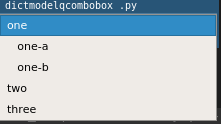

DictModelQComboBox¶
Methods¶
qconcurrency.widgets.DictModelQComboBox.__init__(...) |
|
||||
qconcurrency.widgets.DictModelQComboBox.get_item_indexinfo(...) |
Returns all keys from indexinfo for a particular item. | ||||
qconcurrency.widgets.DictModelQComboBox.get_modelindex_from_index(index) |
Returns the QtCore.QModelIndex corresponding to the item with a QtWidgets.QComboBox index. |
||||
qconcurrency.widgets.DictModelQComboBox.get_selected() |
Returns the modelitem corresponding to the user’s selection. | ||||
qconcurrency.widgets.DictModelQComboBox.set_selected(...) |
Sets the selected item in the QComboBox | ||||
qconcurrency.widgets.DictModelQComboBox.staticMetaObject |
|||||
Documentation¶
-
class
qconcurrency.widgets.DictModelQComboBox(dictmodel, indexinfo={'id': '_id', 'name': 'name'})[source]¶ Bases:
PySide.QtGui.QComboBoxComboBox whose contents are determined by the contents of a
qconcurrency.models.DictModel. The widget’s contents are updated whenever the modelchanges.Example
-
__init__(dictmodel, indexinfo={'id': '_id', 'name': 'name'})[source]¶ Parameters: - dictmodel (DictModel) – The model you want this QComboBox to display.
- indexinfo (dict, optional) –
Stores information on where the following information from the model:
- name: the name, as it appears in the QComboBox
- id: the id, generally a databaseId that corresponds with the name
This can either be a single dict, if the id/name will be the same column for every level of the dictmodel, or it can be a dictionary with the level, and a dict of id/name for that specific level.
# example 1: # applies to all levels of table indexinfo = { 'id':'_id', 'name':'name' } # example 2: # level-specific columns indexinfo = { 'departmenttype':{'id':'_id', 'name':'departmenttype_name'}, 'department' :{'id':'_id', 'name':'department_name'}, }
-
get_item_indexinfo(modelitem)[source]¶ Returns all keys from indexinfo for a particular item. (taking into account item’s nested-table-level, if indexinfo requires it)
Returns: # if modelitem exists in model { 'id': 123, 'name': 'test name', } # if modelitem does not exist in model {}
-
get_modelindex_from_index(index)[source]¶ Returns the
QtCore.QModelIndexcorresponding to the item with aQtWidgets.QComboBoxindex.
-
get_selected()[source]¶ Returns the modelitem corresponding to the user’s selection. From this object, you can find any information from the model.
Returns: The corresponding DictModelRowto the selected item.See also
DictModelRow.columnvals()DictModelRow.columnval()DictModelRow.id()
-
staticMetaObject= <PySide.QtCore.QMetaObject object>¶
-